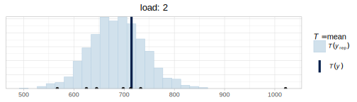
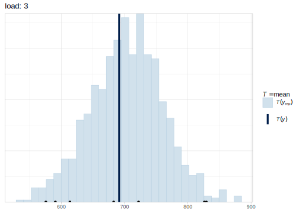
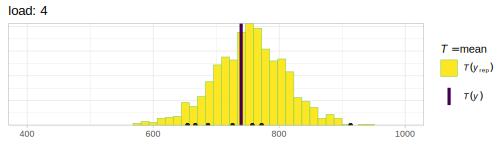
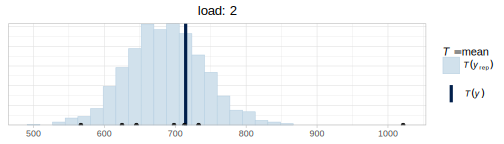
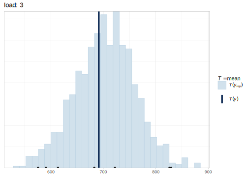
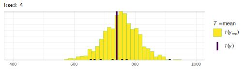

Chapter 4 Bayesian regression models
We generally run experiments because we are interested in the relationship between two or more variables. A regression will tell us how our dependent variable, also called the response or outcome variable (e.g., pupil size, response times, accuracy, etc.) is affected by one or many independent variables, predictors, or explanatory variables. Predictors can be categorical (e.g., male or female), ordinal (first, second, third, etc.), or continuous (e.g., age). In this chapter we focus on simple regression models with different likelihood functions.
4.1 A first linear regression: Does attentional load affect pupil size?
We’ll look at the effect of cognitive processing on human pupil size to illustrate the use of Bayesian linear regression models. Although pupil size is mostly related to the amount of light that reaches the retina or the distance to a perceived object, pupil sizes are also systematically influenced by cognitive processing: Increased cognitive load leads to an increase in the pupil size (for a review, see Mathot 2018).
For this example, we’ll use the data from one subject’s pupil size of the control experiment by Wahn et al. (2016), averaged by trial. The data are available from df_pupil in the package bcogsci.
In this experiment, the subject covertly tracks between zero and five objects among several randomly moving objects on a computer screen. This task is called multiple object tracking (or MOT; see Pylyshyn and Storm 1988). First, several objects appear on the screen, and a subset of them are indicated as “targets” at the beginning. Then, the objects start moving randomly across the screen and become indistinguishable. After several seconds, the objects stop moving and the subject need to indicate which objects were the targets. See Figure 4.1. Our research goal is to examine how the number of moving objects being tracked–that is, how the attentional load–affects pupil size.
FIGURE 4.1: Flow of events in a trial where two objects need to be tracked. Adapted from Blumberg, Peterson, and Parasuraman (2015); licensed under CC BY 4.0.
4.1.1 Likelihood and priors
We will model pupil size as normally distributed, because we are not expecting a skew, and we have no further information available about the distribution of pupil sizes. (Pupil sizes cannot be of size zero or negative, so we know for sure that this choice is not exactly right.) For simplicity, we are also going to assume a linear relationship between load and the pupil size.
Let’s summarize our assumptions:
- There is some average pupil size represented by \(\alpha\).
- The increase of attentional load has a linear relationship with pupil size, determined by \(\beta\).
- There is some noise in this process, that is, variability around the true pupil size i.e., a scale, \(\sigma\).
- The noise is normally distributed.
The generative probability density function will be as follows:
\[\begin{equation} p\_size_n \sim \mathit{Normal}(\alpha + c\_load_n \cdot \beta,\sigma) \end{equation}\]
where \(n\) indicates the observation number with \(n = 1, \ldots, N\).
This means that the formula that we’ll use in brms will be p_size ~ 1 + c_load, where 1 represents the intercept, \(\alpha\), which doesn’t depend on a predictor, and c_load is our predictor that is multiplied by \(\beta\). We will generally indicate with the prefix c_, that a predictor (in this case load) is centered (i.e., we subtract from each value the mean of all values). If load is centered, the intercept represents the pupil size at the average load in the experiment (because at the average load, the centered load is zero, and then \(\alpha + 0 \cdot \beta\)). Alternatively, if the load had not been centered (i.e., starts with no load, then one, two, etc.), then the intercept would represent the pupil size when there is no load. Although we can fit a frequentist model with lm(p_size ~ 1 + c_load, data set), when we fit a Bayesian model, we have to specify priors for each of the parameters.
For setting the priors, we need to do some research and find some information about pupil sizes. Although we might know that pupil diameters range between 2 to 4 mm in bright light to 4 to 8 mm in the dark (Spector 1990), this experiment was conducted with the Eyelink-II eyetracker which measures the pupils in arbitrary units (Hayes and Petrov 2016). If this is our first analysis of pupil size, before setting up the priors, we’ll need to look at some measures of pupil size. (If we had analyzed this type of data before, we could also look at estimates from previous experiments). Fortunately, we have some measurements of the same subject with no attentional load for the first 100 ms, measured every 10 ms, in the data frame df_pupil_pilot from the package bcogsci: This will give us some idea about the order of magnitude of our dependent variable.
## Min. 1st Qu. Median Mean 3rd Qu. Max.
## 852 856 862 861 866 868With this information we can set a regularizing prior for \(\alpha\). We center the prior around 1000 to be in the right order of magnitude.12 Since we don’t know how much pupil sizes are going to vary by load yet, we include a rather wide prior by defining it as a normal distribution and setting its standard deviation as \(500\).
\[\begin{equation} \alpha \sim \mathit{Normal}(1000, 500) \end{equation}\]
Given that our predictor load is centered, with the prior for \(\alpha\), we are saying that we suspect that the average pupil size for the average load in the experiment will be in a 95% credible interval limited by approximately \(1000 \pm 2 \cdot 500 = [0, 2000]\) units. We can calculate this with more precision in R using the qnorm function:
## [1] 20 1980We know that the measurements of the pilot data are strongly correlated because they were taken 10 milliseconds apart. For this reason, they won’t tell us how much the pupil size can vary. We set up quite an uninformative prior for \(\sigma\) that encodes our lack of precise information: \(\sigma\) is surely larger than zero and has to be in the order of magnitude of the pupil size with no load.
\[\begin{equation} \sigma \sim \mathit{Normal}_+(0, 1000) \end{equation}\]
With this prior for \(\sigma\), we are saying that we expect that the standard deviation of the pupil sizes should be in the following 95% credible interval.
## [1] 31.3 2241.4In order to compute the 95% credible interval, we used qtnorm from the extraDistr package rather than qnorm(). As mentioned earlier, the relevant command specification is qtnorm(..., a = 0); recall that a = 0 indicates a truncated normal distribution, truncated at the left by zero.
The mean of \(\mathit{Normal}_+\), a normal distribution truncated at zero so as to allow for only positive values, does not coincide with its location indicated with the parameter \(\mu\) (and neither does the standard deviation coincide with the scale, \(\sigma\)); see Box 4.1.
## mean sd
## 801 601We still need to set a prior for \(\beta\), the change in pupil size produced by the attentional load. Given that pupil size changes are not easily perceptible (we don’t usually observe changes in pupil size in our day-to-day life), we expect them to be much smaller than the pupil size (which we assume has mean 1000 units), so we use the following prior:
\[\begin{equation} \beta \sim \mathit{Normal}(0, 100) \end{equation}\]
With the prior of \(\beta\), we are saying that we don’t really know if the attentional load will increase or even decrease the pupil size (it is centered at zero), but we do know that one unit of load (that is one more object to track) will potentially change the pupil size in a way that is consistent with the following 95% credible interval.
## [1] -196 196That is, we don’t expect changes in size that increase or decrease the pupil size more than 200 units for one unit increase in load.
The priors we have specified here are relatively uninformative; as mentioned earlier, this is because we don’t have much prior experience with pupil size studies. In other settings, we might have more prior knowledge and experience; in that case, we would use somewhat more principled priors. We will return to this point in the chapter on priors (chapter 6) and on a Bayesian workflow (chapter 7).
Box 4.1 Truncated distributions
Any distribution can be truncated. For a continuous distribution, the truncated version of the original distribution will have non-zero probability density values for a continuous subset of the original coverage. To make this more concrete, in our previous example, the normal distribution has coverage for values between minus infinity to plus infinity, and our truncated version \(Normal_+\) has coverage between zero and plus infinity: all negative values have a density of zero. Let’s see how we can generalize this to be able to understand any truncation of any continuous distribution. (For the discrete case, we can simply replace the integral with a sum, and replace PDF with PMF).
From the axiomatic definitions of probability, we know that the area below a PDF, \(f(x)\), must be equal to one (section 1.1). More formally, this means that the integral of \(f\) evaluated as \(f(-\infty <X < \infty)\) should be equal to one:
\[\begin{equation} \int_{-\infty}^{\infty} f(x) dx = 1 \end{equation}\]
But if the distribution is truncated, \(f\) is going to be evaluated in some subset of its possible values, \(f(a <X < b)\); in the specific case of \(Normal_+\), for example, \(a = 0\), and \(b=\infty\). In the general case, this means that the integral of the PDF evaluated for \(a <X < b\) will be lower than one, unless \(a=-\infty\) and \(b=+\infty\).
\[\begin{equation} \int_{a}^{b} f(x) dx < 1 \end{equation}\]
We want to ensure that we build a new PDF for the truncated distribution so that even though it has less coverage than the non-truncated version, it still integrates to one. To achieve this, we divide the “unnormalized” PDF by the total area of \(f(a <X < b)\) (recall the discussion surrounding Equation (1.1)):
\[\begin{equation} f_{[a,b]}(x) = \frac{f(x)}{\int_{a}^{b} f(x) dx} \end{equation}\]
The denominator of the previous equation is the difference between the CDF evaluated at \(X = b\) and the CDF evaluated at \(X =a\); this can be written as \(F(b) - F(a)\):
\[\begin{equation} f_{[a,b]}(x) = \frac{f(x)}{F(b) - F(a)} \tag{4.1} \end{equation}\]
For the specific case, where \(f(x)\) is \(Normal(x | 0, \sigma)\) and we want the PDF of \(Normal_+(x | 0, \sigma)\), and thus \(a= 0\) and \(b =\infty\).
\[\begin{equation} Normal_+(x |0, \sigma) = \frac{Normal(x | 0, \sigma)}{1/2} \end{equation}\]
Because \(F(X= b =\infty) = 1\) and \(F(X = a = 0) = 1/2\).
You can verify this in R (and this is valid for any value of sd).
## [1] TRUEUnless the truncation of the normal distribution is symmetrical, the mean \(\mu\), of the truncated normal does not coincide with the mean \(\hat{\mu}\) of the parent (untruncated) normal distribution, and for any type of truncation, the standard deviation of the truncated distribution \(\sigma\) does not coincide with the standard deviation \(\hat\sigma\) of the parent distribution. Confusingly enough, the arguments of the family of truncated functions *tnorm keeps the names of the family of functions *norm, the terms mean and sd. So, when defining a truncated normal distribution like dtnorm(mean = 300, sd = 100, a = 0, b = Inf), the mean and sd refer to the mean \(\hat{\mu}\) and standard deviation \(\hat\sigma\) of the untruncated parent distribution.
Sometimes one needs to model some observed data as coming from a truncated normal distribution. An example would be a vector of observed standard deviations; perhaps one wants to use these estimates to work out a truncated normal prior. In order to derive such an empirically motivated prior, we have to work out what mean and standard deviation we need to use in a truncated normal distribution. We could compute the mean and standard deviation from the vector of standard deviations, and then use the procedure shown below to work out the mean and standard deviation that we would need to put into the truncated normal distribution. This approach is used in chapter 6, section 6.1.4 for working out a prior based on standard deviation estimates from existing data.
The mean and standard deviation of the parent distribution of a truncated normal (\(\hat\mu\) and \(\hat\sigma\)) with boundaries \(a\) and \(b\), given the mean \(\mu\) and standard deviation \(\sigma\) of the truncated normal, are computed as follows (Johnson, Kotz, and Balakrishnan 1995). \(\phi(X)\) is the PDF of the standard normal (i.e., \(\mathit{Normal}(\mu=0, \sigma=1)\)) evaluated at \(X\), and \(\Phi(X)\) is the CDF of the standard normal evaluated at \(X\).
First, define two terms \(\alpha\) and \(\beta\) for convinience:
\[\begin{align} \alpha =(a-\hat\mu )/\hat\sigma && \beta =(b-\hat\mu )/\hat\sigma \end{align}\]
Then, the mean \(\mu\) of the truncated distribution can be computed as follows based on the parameters of the parent distribution:
\[\begin{equation} \mu = \hat\mu - \hat\sigma {\frac {\phi (\beta )-\phi (\alpha )}{\Phi (\beta )-\Phi (\alpha )}} \tag{4.2} \end{equation}\]
The variance \(\sigma^2\) of the truncated distribution is:
\[\begin{equation} \sigma^2 = \hat\sigma^2 \times \left( 1 - \frac{\beta \phi (\alpha )-\alpha \phi (\beta )}{\Phi (\beta )-\Phi (\alpha )} - \left(\frac {\phi (\alpha )-\phi (\beta )}{\Phi (\beta )-\Phi (\alpha )}\right)^2 \right) \tag{4.3} \end{equation}\]
Equations (4.2) and (4.3) have two variables, so if one is given the values for the truncated distribution \(\mu\) and \(\sigma\), one can solve (using algebra) for the mean and standard deviation of the untruncated distribution, \(\hat\mu\) and \(\hat\sigma\).
For example, suppose that \(a=0\) and \(b=500\), and that the mean and standard deviation of the untruncated parent distribution is \(\hat\mu=300\) and \(\hat\sigma=200\). We can simulate such a situation and estimate the mean and standard deviation of the truncated distribution:
x <- rtnorm(10000000, mean = 300, sd = 200, a = 0, b = 500)
## the mean and sd of the truncated distributions
## using simulation:
mean(x)## [1] 271## [1] 129These simulated values are identical to the values computed using equations (4.2) and (4.3):
a <- 0
b <- 500
bar_x <- 300
bar_sigma <- 200
alpha <- (a - bar_x) / bar_sigma
beta <- (b - bar_x) / bar_sigma
term1 <- ((dnorm(beta) - dnorm(alpha)) /
(pnorm(beta) - pnorm(alpha)))
term2 <- ((beta * dnorm(beta) - alpha * dnorm(alpha)) /
(pnorm(beta) - pnorm(alpha)))
## the mean and sd of the truncated distribution
## computed analytically:
(mu <- bar_x - bar_sigma * term1)## [1] 271## [1] 129The equations for the mean and variance of the truncated distribution (\(\mu\) and \(\sigma\)) can also be used to work out the mean and variance of the parent untruncated distribution (\(\hat\mu\) and \(\hat\sigma\)), if one has estimates for \(\mu\) and \(\sigma\) (from data).
Suppose that we have observed data with mean \(\mu = 271\) and \(\sigma=129\). We want to assume that the data are coming from a truncated normal which has lower bound \(0\) and upper bound \(500\). What are the mean and standard deviation of the parent distribution, \(\hat\mu\) and \(\hat\sigma\)?
To answer this question, first rewrite the equations as follows:
\[\begin{equation} \mu - \hat\mu + \hat\sigma {\frac {\phi (\beta )-\phi (\alpha )}{\Phi (\beta )-\Phi (\alpha )}} = 0 \tag{4.4} \end{equation}\]
The variance \(\sigma^2\) of the truncated distribution is:
\[\begin{equation} \sigma^2 - \hat\sigma^2 \times \left( 1 - \frac{\beta \phi (\alpha )-\alpha \phi (\beta )}{\Phi (\beta )-\Phi (\alpha )} - \left(\frac {\phi (\alpha )-\phi (\beta )}{\Phi (\beta )-\Phi (\alpha )}\right)^2 \right) = 0 \tag{4.5} \end{equation}\]
Next, solve for \(\hat\mu\) and \(\hat\sigma\) given the observed mean and the standard deviation of the truncated distribution, and that one knows the boundaries (\(a\), and \(b\)).
Define the system of equations according to the specifications of multiroot from the package rootSolve: x for the unknowns (\(\hat\mu\) and \(\hat\sigma\)), and parms for the known parameters: \(a\), \(b\), and the mean and standard deviation of the truncated normal.
eq_system <- function(x, parms) {
mu_hat <- x[1]
sigma_hat <- x[2]
alpha <- (parms["a"] - mu_hat) / sigma_hat
beta <- (parms["b"] - mu_hat) / sigma_hat
c(
F1 = parms["mu"] - mu_hat + sigma_hat *
(dnorm(beta) - dnorm(alpha)) / (pnorm(beta) - pnorm(alpha)),
F2 = parms["sigma"] -
sigma_hat *
sqrt((1 - ((beta) * dnorm(beta) - (alpha) * dnorm(alpha)) /
(pnorm(beta) - pnorm(alpha)) -
((dnorm(beta) - dnorm(alpha)) /
(pnorm(beta) - pnorm(alpha)))^2))
)
}Solving the two equations using multiroot() from the package rootSolve gives us the mean and standard deviation \(\hat\mu\) and \(\hat\sigma\) of the parent normal distribution. (Notice that x is a required parameter of the previous function so that it works with multiroot(), however, outside of the function the variable x is a vector containing the samples of the truncated normal distribution generated with rtnorm()).
soln <- multiroot(f = eq_system, start = c(1, 1),
parms = c(a = 0, b = 500,
mu = mean(x), sigma = sd(x)))
soln$root## [1] 300 2004.1.2 The brms model
Before fitting the brms model of the effect of load on pupil size, load the data and center the predictor load:
## # A tibble: 41 × 5
## subj trial load p_size c_load
## <int> <int> <int> <dbl> <dbl>
## 1 701 1 2 1021. -0.439
## 2 701 2 1 951. -1.44
## 3 701 3 5 1064. 2.56
## # … with 38 more rowsNow fit the brms model:
fit_pupil <- brm(p_size ~ 1 + c_load,
data = df_pupil,
family = gaussian(),
prior = c(
prior(normal(1000, 500), class = Intercept),
prior(normal(0, 1000), class = sigma),
prior(normal(0, 100), class = b, coef = c_load)
)
)The only difference from our previous models is that we now have a predictor in the formula and in the priors. Priors for predictors are indicated with class = b, and the specific predictor with coef = c_load. If we want to set the same priors to different predictors we can omit the argument coef. We can remove the 1 of the formula, and brm() will fit the exact same model as when we specify 1 explicitly. If we really want to remove the intercept we indicate this with 0 +... or -1 +.... See also the Box 4.2 for more details about the treatment of the intercepts by brms. The priors are normal distributions for the intercept (\(\alpha\)) and the slope (\(\beta\)), and a truncated normal distribution for the scale of the likelihood (\(\sigma\)), which in this case, since we are dealing with a normal distribution, it coincides with its the standard deviation. brms will automatically truncate that distribution and allow for only positive values.
Inspect the output of our model now. The posteriors and trace plots are shown in Figure 4.2; the figure is generated by typing:
FIGURE 4.2: Posterior distributions of the parameters in the brms model fit_pupil, along with the corresponding trace plots.
## ...
## Population-Level Effects:
## Estimate Est.Error l-95% CI u-95% CI Rhat Bulk_ESS Tail_ESS
## Intercept 701.76 20.50 662.02 742.54 1.00 3974 2833
## c_load 33.59 12.00 10.17 56.69 1.00 3739 2806
##
## Family Specific Parameters:
## Estimate Est.Error l-95% CI u-95% CI Rhat Bulk_ESS Tail_ESS
## sigma 128.40 15.06 103.30 161.16 1.00 3458 3057
##
## ...In the next section, we discuss how one can communicate the relevant information from the model.
Box 4.2 Intercepts in brms
When we set up a prior for the intercept in brms, we actually set a prior for an intercept assuming that all the predictors are centered. This means that when predictors are not centered (and only then), there is a mismatch between the interpretation of the intercept as returned in the output of brms and the interpretation of the intercept with respect to its prior specification. In this case, only the intercept in the output corresponds to the formula in the brms call. However, as we show below, when the intercept is much larger than the effects that we are considering in the formula (what we generally call \(\beta\)), this discrepancy hardly matters.
The reason for this mismatch when our predictors are uncentered is that brms increases sampling efficiency by automatically centering all the predictors internally (that is the population-level design matrix \(X\) is internally centered around its column means when brms fits a model). This did not matter in our previous examples because we centered our predictor (or we had none), but it might matter if we want to have uncentered predictors. In the design we are discussing, a non-centered predictor of load will mean that the intercept, \(\alpha\), has a straightforward interpretation: the \(\alpha\) is the mean pupil size when there is no attention load. This is in contrast with the centered version presented before, where the intercept \(\alpha\) represents the pupil size for the average load of 2.44 (c_load = 0). The difference between the non-centered model (below) and the centered version presented before is depicted in Figure 4.3.
Suppose that we are quite sure that the prior values for the no load condition (i.e., condition is non-centered) fall between 400 and 1200 ms. In that case, the following prior could be set for \(\alpha\): \(\mathit{Normal}(800,200)\). In this case, the model becomes:
prior_nc <- c(
prior(normal(800, 200), class = b, coef = Intercept),
prior(normal(0, 1000), class = sigma),
prior(normal(0, 100), class = b, coef = load)
)
fit_pupil_non_centered <- brm(p_size ~ 0 + Intercept + load,
data = df_pupil,
family = gaussian(),
prior = prior_nc
)FIGURE 4.3: Regression lines for the non-centered and centered linear regressions. The intercept (or \(\alpha\)) represented by a circle is positioned differently depending on the centering, whereas the slope (or \(\beta\)) represented by a vertical dashed line has the same magnitude in both models.
When the predictor is non-centered as shown above, the regular centered intercept is removed by adding 0 to the formula, and by replacing the intercept with the “actual” intercept we want to set priors on with Intercept. The word Intercept is a reserved word; we cannot name any predictor with this name. This new parameter is also of the class b, so its prior needs to be defined accordingly. Once we use 0 + Intercept + .., the intercept is not calculated with predictors that are automatically centered any more.
The output below shows that, as expected, although the posterior for the intercept has changed noticeably, the posterior for the effect of load remains virtually unchanged.
## Estimate Est.Error Q2.5 Q97.5
## b_Intercept 624.7 34.4 557.89 694.0
## b_load 32.2 11.6 8.98 55.2Notice the following potential pitfall. A model like the one below will fit a non-centered load predictor, but will assign a prior of \(\mathit{Normal}(800,200)\) to the intercept of a model that assumes a centered predictor, \(\alpha_{centered}\), and not the current intercept, \(\alpha\).
What does it mean to set a prior to \(\alpha_{centered}\) in a model that doesn’t include \(\alpha_{centered}\)?
The fitted (expected) values of the non-centered model and the centered one are identical, that is, the values of the response distribution without the residual error are identical for both models:
\[\begin{equation} \alpha + load_n \cdot \beta = \alpha_{centered} + (load_n - mean(load)) \cdot \beta \tag{4.6} \end{equation}\]
The left side of Equation (4.6) refers to the expected values based on our current non-centered model, and the right side refers to the expected values based on the centered model. We can re-arrange terms to understand what the effect is of a prior on \(\alpha_{centered}\) in our model that doesn’t include \(\alpha_{centered}\).
\[\begin{equation} \begin{aligned} \alpha + load_n \cdot \beta &= \alpha_{centered} + load_n\cdot \beta - mean(load) \cdot \beta\\ \alpha &= \alpha_{centered} - mean(load) \cdot \beta\\ \alpha + mean(load) \cdot \beta &= \alpha_{centered} \end{aligned} \end{equation}\]
That means that in the centered model, we are actually setting our prior to \(\alpha + mean(load) \cdot \beta\). When \(\beta\) is very small (or the means of our predictors are very small because they might be ``almost’’ centered), and the prior for \(\alpha\) is very wide, we might hardly notice the difference between setting a prior to \(\alpha_{centered}\) or to our actual \(\alpha\) in a non-centered model (especially if the likelihood dominates anyway). But it is important to pay attention to what the parameters represent that we are setting priors on.
In our example analyses in this book, we will always center our predictors.
4.1.3 How to communicate the results?
We want to answer our research question “What is the effect of attentional load on the subject’s pupil size?” For that we’ll need to examine what happens with the posterior distribution of \(\beta\), which is printed out as c_load in the summary of brms. The summary of the posterior tells us that the most likely values of \(\beta\) will be around the mean of the posterior, 33.59, and we can be 95% certain that the value of \(\beta\), given the model and the data, lies between 10.17 and 56.69.
We see that as the attentional load increases, the pupil size of the subject becomes larger. If we want to determine how likely it is that the pupil size increased rather than decreased, we can examine the proportion of samples above zero. (The intercept and the slopes are always preceded by b_ in brms. One can see all the names of parameters being estimated with variables().)
## [1] 0.995This high probability does not mean that the effect of load is non-zero. It means instead that it’s much more likely that the effect is positive rather than negative. In order to claim that the effect is likely to be non-zero, we would have to compare the model with an alternative model in which the model assumes that the effect of load is \(0\). We’ll come back to this issue in the model comparison chapter 14.
4.1.4 Descriptive adequacy
Our model converged and we obtained a posterior distribution. There is, however, no guarantee that our model is good enough to represent our data. We can use posterior predictive checks to check the descriptive adequacy of the model.
Sometimes it’s useful to customize the posterior predictive check to visualize the fit of our model. We iterate over the different loads (e.g, 0 to 4), and we show the prior predictive distributions based on 100 simulations for each load together with the observed pupil sizes in Figure 4.4. We don’t have enough data to derive a strong conclusion: both the predictive distributions and our data look very widely spread out, and it’s hard to tell if the distribution of the observations could have been generated by our model. For now we can say that it doesn’t look too bad.
for (l in 0:4) {
df_sub_pupil <- filter(df_pupil, load == l)
p <- pp_check(fit_pupil,
type = "dens_overlay",
ndraws = 100,
newdata = df_sub_pupil
) +
geom_point(data = df_sub_pupil, aes(x = p_size, y = 0.0001)) +
ggtitle(paste("load: ", l)) +
coord_cartesian(xlim = c(400, 1000))
print(p)
}FIGURE 4.4: The plot shows 100 predicted distributions with the label \(y_{rep}\), the distribution of pupil size data in black with the label \(y\), and the observed pupil sizes in black dots for the five levels of attentional load.
In Figure 4.5, we look instead at the distribution of a summary statistic, such as mean pupil size by load:
for (l in 0:4) {
df_sub_pupil <- filter(df_pupil, load == l)
p <- pp_check(fit_pupil,
type = "stat",
ndraws = 1000,
newdata = df_sub_pupil,
stat = "mean"
) +
geom_point(data = df_sub_pupil, aes(x = p_size, y = 0.001)) +
ggtitle(paste("load: ", l)) +
coord_cartesian(xlim = c(400, 1000))
print(p)
} 

FIGURE 4.5: Distribution of posterior predicted means in gray and observed pupil size means in black lines by load.
Figure 4.5 shows that the observed means for no load and for a load of one are falling in the tails of the distributions. Although our model predicts a monotonic increase of pupil size, the data might be indicating that the relevant difference is simply between no load, and some load. However, given the uncertainty in the posterior predictive distributions and that the observed means are contained somewhere in the predicted distributions, it could be the case that with this model we are overinterpreting noise.
4.2 Log-normal model: Does trial affect response times?
Let us revisit the small experiment from section 3.2.1, where a subject repeatedly pressed the space bar as fast as possible, without paying attention to the stimuli. We want to know whether the subject tended to speed up (a practice effect) or slow down (a fatigue effect) while pressing the space bar. We’ll use the same data set df_spacebar as before, and we’ll center the column trial:
4.2.1 Likelihood and priors for the log-normal model
If we assume that response times are log-normally distributed, we could fit a likelihood such as the following:
\[\begin{equation} rt_n \sim \mathit{LogNormal}(\alpha + c\_trial_n \cdot \beta,\sigma) \tag{4.7} \end{equation}\]
where \(n =1, \ldots, N\), and \(rt\) is the dependent variable (response times in milliseconds). The variable \(N\) represents the total number of data points.
We use the same priors as in section 3.6.3 for \(\alpha\) (which is equivalent to \(\mu\) in the previous model) and for \(\sigma\).
\[\begin{equation} \begin{aligned} \alpha &\sim \mathit{Normal}(6, 1.5) \\ \sigma &\sim \mathit{Normal}_+(0, 1)\\ \end{aligned} \end{equation}\]
We still need a prior for \(\beta\). Effects are multiplicative rather than additive when we assume a log-normal likelihood, and that means that we need to take into account \(\alpha\) in order to interpret \(\beta\); for details, see Box 4.3. We are going to try to understand how all our priors interact, by generating some prior predictive distributions. We start with the following prior centered in zero, a prior agnostic regarding the direction of the effect, which allows for both a slowdown (\(\beta>0\)) or a speedup (\(\beta<0\)):
\[\begin{equation} \beta \sim \mathit{Normal}(0, 1) \end{equation}\]
This is our first attempt at a prior predictive distribution:
# Ignore the dependent variable,
# use a vector of ones a placeholder.
df_spacebar_ref <- df_spacebar %>%
mutate(rt = rep(1, n()))
fit_prior_press_trial <- brm(rt ~ 1 + c_trial,
data = df_spacebar_ref,
family = lognormal(),
prior = c(
prior(normal(6, 1.5), class = Intercept),
prior(normal(0, 1), class = sigma),
prior(normal(0, 1), class = b, coef = c_trial)
),
sample_prior = "only",
control = list(adapt_delta = .9)
)In order to understand the type of data that we are assuming a priori with the prior of the parameter \(\beta\), we’ll plot the median difference between the response times at adjacent trials. As the prior of \(\beta\) gets wider we are going to observe larger differences between adjacent trials. The objective of the prior predictive checks is to calibrate the prior of \(\beta\) to obtain a plausible range of differences.
We are going to plot a distribution of medians because they are less affected by the variance in the posterior predicted distribution than the distribution of mean differences; distributions of means will have much more spread. If we want to make the distribution of means more realistic, we would also need to find a more accurate prior for the scale, \(\sigma\). (Recall that the mean of log-normal distributed values depend on both the location, \(\mu\) and the scale, \(\sigma\), of the distribution.) To plot the median effect, we first define a function that calculates the difference between adjacent trials, and then applies the median to the result. We use that function in pp_check and we show the results in Figure 4.6. As expected, it is centered on zero (as our prior), but we see that the distribution of possible medians for the effect is too widely spread out and includes values that are too extreme.
median_diff <- function(x) {
median(x - lag(x), na.rm = TRUE)
}
pp_check(fit_prior_press_trial,
type = "stat",
stat = "median_diff",
# show only prior predictive distributions
prefix = "ppd",
# each bin has a width of 500ms
binwidth = 500) +
# cut the top of the plot to improve its scale
coord_cartesian(ylim = c(0, 50))FIGURE 4.6: Prior predictive distribution of the median effect of the model defined in 4.2 with \(\beta \sim \mathit{Normal}(0, 1)\).
We repeat the same procedure with \(\beta \sim \mathit{Normal}(0,0.01)\), and we plot it in Figure 4.7. The prior predictive distribution shows us that the prior is still quite vague, it is, however at least in the right order of magnitude.
FIGURE 4.7: Prior predictive distribution of the median difference in response times between adjacent trials based on the model defined in 4.2 with \(\beta \sim \mathit{Normal}(0, 0.01)\).
Prior selection might look daunting and a lot of work. However, this work is usually done only the first time we encounter an experimental paradigm; besides, priors can be informed by the estimates from previous experiments (even maximum likelihood estimates from frequentist models can be useful). We will generally use very similar (or identical priors) for analyses dealing with the same type of task. When in doubt, a sensitivity analysis (see section 3.4) can tell us whether the posterior distribution depends unintentionally strongly on our prior selection. We will return to the issue of prior selection in chapter 6.
Box 4.3 Understanding the Log-normal likelihood
It is important to understand what we are assuming with our log-normal likelihood. Formally, if a random variable \(Z\) is normally distributed with mean \(\mu\) and variance \(\sigma^2\), then the transformed random variable \(Y = \exp(Z)\) is log-normally distributed and has density:
\[\begin{equation} \mathit{LogNormal}(y|\mu,\sigma)=f(z)= \frac{1}{\sqrt{2\pi \sigma^2}y} \exp \left(-\frac{(\log(y)-\mu)^2}{2\sigma^2} \right) \end{equation}\]
As explained in section 3.6.2, the model from Equation (4.7) is equivalent to the following:
\[\begin{equation} \log(rt_n) \sim \mathit{Normal}(\alpha + c\_trial_n \cdot \beta,\sigma)\\ \tag{4.8} \end{equation}\]
The family of normal distributions is closed under linear transformations: that is, if \(X\) is normally distributed with mean \(\mu\) and standard deviation \(\sigma\), then (for any real numbers \(a\) and \(b\)), \(a X + b\) is also normally distributed, with mean \(a \mu +b\) (and standard deviation \(\sqrt{a^2\sigma^2}=|a|\sigma\)).
This means that, assuming \(Z \sim \mathit{Normal}(\alpha, \sigma)\), Equation (4.8) can be re-written as follows:
\[\begin{equation} \log(rt_n) = Z + c\_trial_n \cdot \beta \tag{4.9} \end{equation}\]
We exponentiate both sides, and we use the property of exponents that \(\exp(x+y)\) is equal to \(\exp(x) \cdot \exp(y)\), and we set \(Y =\exp(Z)\).
\[\begin{equation} \begin{aligned} rt_n &= \exp \big(Z + c\_trial_n \cdot \beta\big) \\ rt_n &= \exp(Z ) \cdot \exp\big(c\_trial_n \cdot \beta\big) \\ rt_n &= Y \cdot \exp\big(c\_trial_n \cdot \beta\big) \end{aligned} \end{equation}\]
The last equation has two terms being multiplied, the first one, \(Y\), is telling us that we are assuming that response times are log-normally distributed with a median of \(\exp(\alpha)\), the second term, \(\exp(c\_trial_n \cdot \beta)\) is telling us that the effect of trial number is multiplicative and grows or decays exponentially with the trial number. This has two important consequences:
Different values of the intercept, \(\alpha\), given the same \(\beta\), will affect the difference in response times for two adjacent trials (this is in contrast to what happens with an additive model such as normal likelihood); see Figure 4.8. This is because, unlike in the additive case, the intercept doesn’t cancel out:
Additive case:
\[\begin{equation} \begin{aligned} & (\alpha + trial_n \cdot \beta) - (\alpha + trial_{n-1} \cdot \beta) = \\ &=\alpha -\alpha + ( trial_n - trial_{n-1} ) \cdot \beta\\ &= ( trial_n - trial_{n-1} ) \cdot \beta \end{aligned} \end{equation}\]
Multiplicative case:
\[\begin{equation} \begin{aligned} &\exp(\alpha) \cdot \exp(trial_n \cdot \beta) -\exp(\alpha) \cdot \exp(trial_{n-1} \cdot \beta) =\\ &= \exp(\alpha) \big(\exp(trial_n \cdot \beta) - \exp(trial_{n-1}\cdot \beta) \big)\\ &\neq \big(\exp(trial_n) - \exp(trial_{n-1}) \big) \cdot \exp(\beta) \end{aligned} \end{equation}\]
FIGURE 4.8: Fitted value of the difference in reaction time between two adjacent trials, when \(\beta=0.01\) and \(\alpha\) lies between 0.1 and 15. The graph shows how changes in the intercept lead to changes in the difference in response times between trials, even if \(\beta\) is fixed.
- As the trial number increases, the same value of \(\beta\) will have a very different impact on the original scale of the dependent variable: Any (fixed) negative value for \(\beta\) will lead to exponential decay and any (fixed) positive value will lead to exponential growth; see Figure 4.9.
FIGURE 4.9: Fitted value of the dependent variable (response times in ms) as function of trial number, when (A) \(\beta = -0.01\), exponential decay, and when (B) \(\beta =0.01\), exponential growth.
Can exponential growth or decay make sense? We need to consider that if they do make sense, they will be an approximation valid for a specific range of values, at some point we will expect a ceiling or a floor effect: response times cannot truly be 0 milliseconds, or take several minutes. However, in our specific model, exponential growth or decay by trial is probably a bad approximation: We will predict that our subject will take extremely long (if \(\beta >0\)) or extremely short (if \(\beta <0\)) time in pressing the space bar in a relatively low number of trials. This doesn’t mean that the likelihood is wrong by itself, but it does mean that at least we need to put a cap on the growth or decay of our experimental manipulation. We can do this if the exponential growth or decay is a function of, for example, log-transformed trial numbers:
\[\begin{equation} rt_n \sim \mathit{LogNormal}(\alpha + c\_\log\_trial_n \cdot \beta,\sigma)\\ \end{equation}\]
FIGURE 4.10: Fitted value of the dependent variable (response times in ms) as function of the natural logarithm of the trial number, when (A) \(\beta=-0.01\), exponential decay, and when (B) \(\beta =.01\), exponential growth.
Log-normal distributions everywhere
The normal distribution is most often assumed to describe the random variation that occurs in the data from many scientific disciplines. However, most measurements actually show skewed distributions. Limpert, Stahel, and Abbt (2001) discuss the log-normal distribution in scientific disciplines and how diverse type of data, from lengths of latent periods of infectious diseases to distribution of mineral resources in the Earth’s crust, including even body height–the quintessential example of a normal distribution–closely fit the log-normal distribution.
Limpert, Stahel, and Abbt (2001) point out that because a random variable that results from multiplying many independent variables has an approximate log-normal distribution, the most basic indicator of the importance of the log-normal distribution may be very general: Chemistry and physics are fundamental in life, and the prevailing operation in the laws of these disciplines is multiplication rather than addition.
Furthermore, at many physiological and anatomical levels in the brain, the distribution of numerous parameters is in fact strongly skewed with a heavy tail, suggesting that skewed (typically log-normal) distributions are fundamental to structural and functional brain organization. This might be explained given that the majority of interactions in highly interconnected systems, especially in biological systems, are multiplicative and synergistic rather than additive (Buzsáki and Mizuseki 2014).
Does the log-normal distribution make sense for response times? It has been long noticed that the log-normal distribution often provides a good fit to response times distributions (Brée 1975; Ulrich and Miller 1994). One advantage of assuming log-normally distributed response times (but, in fact, this is true for many skewed distributions) is that it entails that the standard deviation of the reaction time distribution will increase with the mean, as has been observed in empirical distributions of response times (Wagenmakers, Grasman, and Molenaar 2005). Interestingly, it turns out that log-normal response times are also easily generated by certain process models. Ulrich and Miller (1993) show, for example, that models in which response times are determined by a series of processes cascading activation from an input level to an output level (usually passing through a number of intervening processing levels along the way) can generate log-normally distributed response times.
4.2.2 The brms model
We are now relatively satisfied with the priors for our model, and we can fit the model of the effect of trial as a button-pressing using brms. We need to specify that the family is lognormal().
fit_press_trial <- brm(rt ~ 1 + c_trial,
data = df_spacebar,
family = lognormal(),
prior = c(
prior(normal(6, 1.5), class = Intercept),
prior(normal(0, 1), class = sigma),
prior(normal(0, .01), class = b, coef = c_trial)
)
)Instead of printing out the complete output from the model, look at the estimates from the posteriors for the parameters \(\alpha\), \(\beta\), and \(\sigma\). These parameters are on the log scale:
## Estimate Est.Error Q2.5 Q97.5
## b_Intercept 5.118661 0.0067701 5.105434 5.132173
## b_c_trial 0.000521 0.0000634 0.000397 0.000643
## sigma 0.123109 0.0045087 0.114624 0.132112The posterior distributions can be plotted to obtain a graphical summary of all the parameters in the model (Figure 4.11:
FIGURE 4.11: Posterior distributions of the model of the effect of trial on button-pressing.
Next, we turn to the question of what we can report as our results, and what we can conclude from the data.
4.2.3 How to communicate the results?
As shown above, the first step is to summarize the posteriors in a table or graphically (or both). If the research relates to the effect estimated by the model, the posterior of \(\beta\) can be summarized in the following way: \(\hat\beta = 0.00052\), 95% CrI = \([ 0.0004 , 0.00064 ]\).
The effect is easier to interpret in milliseconds. We can transform the estimates back to the millisecond scale from the log scale, but we need to take into account that the scale is not linear, and that the effect between two button presses will differ depending on where we are in the experiment.
We will have a certain estimate if we consider the difference between response times in a trial at the middle of the experiment (when the centered trial number is zero) and the previous one (when the centered trial number is minus one).
alpha_samples <- as_draws_df(fit_press_trial)$b_Intercept
beta_samples <- as_draws_df(fit_press_trial)$b_c_trial
effect_middle_ms <- exp(alpha_samples) -
exp(alpha_samples - 1 * beta_samples)
## ms effect in the middle of the expt
## (mean trial vs. mean trial - 1)
c(mean = mean(effect_middle_ms),
quantile(effect_middle_ms, c(0.025, 0.975)))## mean 2.5% 97.5%
## 0.0871 0.0662 0.1076We will obtain different estimate if we consider the difference between the second and the first trial:
first_trial <- min(df_spacebar$c_trial)
second_trial <- min(df_spacebar$c_trial) + 1
effect_beginning_ms <-
exp(alpha_samples + second_trial * beta_samples) -
exp(alpha_samples + first_trial * beta_samples)
## ms effect from first to second trial:
c(mean = mean(effect_beginning_ms),
quantile(effect_beginning_ms, c(0.025, 0.975)))## mean 2.5% 97.5%
## 0.0792 0.0617 0.0959So far we converted the estimates to obtain median effects, that’s why we used \(exp(\cdot)\), if we want to obtain mean effects we need to take into account \(\sigma\), since we need to calculate \(exp(\cdot + \sigma^2/2)\). However, we can also use the built-in function fitted(). We can consider again the difference between the second and the first trial this time using fitted().
First, define for which observations we want to obtain the fitted values in millisecond scale. If we are interested in the difference between the second and first trial, create a data frame with their centered versions.
Second, use fitted() on the brms object, including the new data, and setting the summary parameter to FALSE. The first column contains the posterior samples transformed into milliseconds of the first trial, and the second column of the second trial.
## [,1] [,2]
## [1,] 154 154
## [2,] 150 150
## [3,] 159 159Last, calculate the difference between trials, and report mean and 95% quantiles.
effect_beginning_ms <- beginning[, 2] - beginning[,1]
c(mean = mean(effect_beginning_ms),
quantile(effect_beginning_ms, c(0.025, 0.975)))## mean 2.5% 97.5%
## 0.0798 0.0621 0.0966Given that \(\sigma\) is much smaller than \(\mu\), \(\sigma\) doesn’t have a large influence on the mean effects, and the mean and 95% CrI of the mean and median effects are quite similar.
We see that no matter how we calculate the trial effect, there is a slowdown. When reporting the results of these analyses, one should present the posterior mean and the 95% credible interval and then reason about whether the observed estimates are consistent with the prediction from the theory being investigated.
The practical relevance of the effect for the research question can be important too. For example, only after \(100\) button presses do we see a barely noticeable slowdown:
effect_100 <-
exp(alpha_samples + 100 * beta_samples) -
exp(alpha_samples)
c(mean = mean(effect_100),
quantile(effect_100, c(0.025, 0.975)))## mean 2.5% 97.5%
## 8.95 6.76 11.11We need to consider whether our uncertainty of this estimate, and the estimated mean effect have any scientific relevance. Such relevance can be established by considering the previous literature, predictions from a quantitative model, or other expert domain knowledge. Sometimes, a quantitative meta-analysis is helpful; for examples, see Jäger, Engelmann, and Vasishth (2017), Mahowald et al. (2016), Nicenboim, Roettger, and Vasishth (2018), and Vasishth et al. (2013). We will discuss meta-analysis in later in the book, in chapter 13.
Sometimes, researchers are only interested in establishing that an effect is present or absent; the magnitude and uncertainty of the estimate is of secondary interest. Here, the goal is to argue that there is evidence of a slowdown. The word evidence has a special meaning in statistics (Royall 1997), and in null hypothesis significance testing, a likelihood ratio test is the standard way to argue that one has evidence for an effect. In the Bayesian data analysis context, in order to answer such a question, a Bayes factor analysis must be carried out. We’ll come back to this issue in the model comparison chapters 14-16.
4.2.4 Descriptive adequacy
We look now at the predictions of the model. Since we now know that trial effects are very small, we’ll examine predictions of the model for differences in response times between 100 button presses. Similarly as we did for prior predictive checks, we define a function, this time median_diff100(), that calculates the median difference between a trial \(n\) and a trial \(n+100\). This time we’ll compare the observed median difference against the range of predicted differences based on the model and the data rather than only the model as we did for the prior predictions. Below we use virtually the same code that we use for plotting prior predictive checks, but since we now use the fitted model, we’ll obtain posterior predictive checks; this is displayed in Figure 4.12.
median_diff100 <- function(x) median(x - lag(x, 100), na.rm = TRUE)
pp_check(fit_press_trial,
type = "stat",
stat = "median_diff100")
FIGURE 4.12: Posterior predictive distribution of the median difference in response times between a trial \(n\) and a trial \(n+100\) based on the model fit_press_trial and the observed data.
We can conclude that model predictions for differences in response trials between trials are reasonable.
4.3 Logistic regression: Does set size affect free recall?
In this section, we will learn how the principles we have learned so far can naturally extend to generalized linear models (GLMs). We focus on one special case of GLMs that has wide application in linguistics and psychology, logistic regression.
As an example data set, we look at a study investigating the capacity level of working memory. The data are a subset of a data set created by Oberauer (2019). Each subject was presented word lists of varying lengths (2, 4, 6, and 8 elements), and then was asked to recall a word given its position on the list; see Figure 4.13. We will focus on the data from one subject.

FIGURE 4.13: Flow of events in a trial with memory set size 4 and free recall. Adapted from Oberauer (2019); licensed under CC BY 4.0.
It is well-established that as the number of items to be held in working memory increases, performance, that is accuracy, decreases (see Oberauer and Kliegl 2001, among others). We will investigate whether we can investigate this finding with data from only one subject.
The data can be found in df_recall in the package bcogsci. The code below loads the data, centers the predictor set_size, and briefly explores the data set.
data("df_recall")
df_recall <- df_recall %>%
mutate(c_set_size = set_size - mean(set_size))
# Set sizes in the data set:
df_recall$set_size %>%
unique() %>% sort()## [1] 2 4 6 8## # A tibble: 4 × 2
## # Groups: set_size [4]
## set_size n
## <int> <int>
## 1 2 23
## 2 4 23
## 3 6 23
## # … with 1 more rowHere, the column correct records the incorrect vs. correct responses with 0 vs 1, and the column c_set_size records the centered memory set size; these latter scores have continuous values -3, -1, 1, and 3. These continuous values are centered versions of 2, 4, 6, and 8.
## # A tibble: 92 × 8
## subj set_size correct trial session block tested c_set_size
## <chr> <int> <int> <int> <int> <int> <int> <dbl>
## 1 10 4 1 1 1 1 2 -1
## 2 10 8 0 4 1 1 8 3
## 3 10 2 1 9 1 1 2 -3
## # … with 89 more rowsWe want to model the trial-by-trial accuracy and examine whether the probability of recalling a word is related to the number of words in the set that the subject needs to remember.
4.3.1 The likelihood for the logistic regression model
Recall that the Bernoulli likelihood generates a \(0\) or \(1\) response with a particular probability \(\theta\). For example, one can generate simulated data for \(10\) trials, with a 50% probability of getting a \(1\) using rbern from the package extraDistr.
## [1] 0 1 0 1 1 1 0 1 0 0We can therefore define each dependent value correct_n in the data as being generated from a Bernoulli random variable with probability of success \(\theta_n\).
Here, \(n =1, \ldots, N\) indexes the trial, correct_n is the dependent variable (0 indicates an incorrect recall and 1 a correct recall), and \(\theta_n\) is the probability of correctly recalling a probe in a given trial \(n\).
\[\begin{equation} correct_n \sim \mathit{Bernoulli}(\theta_n) \tag{4.10} \end{equation}\]
Since \(\theta_n\) is bounded to be between \(0\) and \(1\) (it is a probability), we cannot just fit a regression model using the normal (or log-normal) likelihood as we did in the preceding examples. Such a model would be inappropriate because it would assume that the data range from \(-\infty\) to \(+\infty\) (or from \(0\) to \(+\infty\)), rather than being limited to zeros and ones.
The generalized linear modeling framework solves this problem by defining a link function \(g(\cdot)\) that connects the linear model to the quantity to be estimated (here, the probabilities \(\theta_n\)). The link function used for \(0\), \(1\) responses is called the logit link, and is defined as follows.
\[\begin{equation} \eta_n = g(\theta_n) = \log\left(\frac{\theta_n}{1-\theta_n}\right) \end{equation}\]
The term \(\frac{\theta_n}{1-\theta_n}\) is called the odds.13 The logit link function is therefore a log-odds; it maps probability values ranging from \([0,1]\) to real numbers ranging from \(-\infty\) to \(+\infty\). Figure 4.14 shows the logit link function, \(\eta = g(\theta)\), and the inverse logit, \(\theta = g^{-1}(\eta)\), which is called the logistic function; the relevance of this logistic function will become clear in a moment.

FIGURE 4.14: The logit and inverse logit (logistic) function.
The linear model is now fit not to the 0,1 responses as the dependent variable, but to \(\eta_n\), i.e., log-odds, as the dependent variable:
\[\begin{equation} \eta_n = \log\left(\frac{\theta_n}{1-\theta_n}\right) = \alpha + \beta \cdot c\_set\_size \end{equation}\]
Unlike the linear models, the model is defined so that there is no residual error term (\(\varepsilon\)) in this model. Once \(\eta_n\) is estimated, one can solve the above equation for \(\theta_n\) (in other words, we compute the inverse of the logit function and obtain the estimates on the probability scale). This gives the above-mentioned logistic regression function:
\[\begin{equation} \theta_n = g^{-1}(\eta_n) = \frac{\exp(\eta_n)}{1+\exp(\eta_n)} = \frac{1}{1+exp(-\eta_n)} \end{equation}\]
The last equality in the equation above arises by dividing both the numerator and denominator by \(\exp(\eta_n)\).
In summary, the generalized linear model with the logit link fits the following Bernoulli likelihood:
\[\begin{equation} correct_n \sim \mathit{Bernoulli}(\theta_n) \tag{4.11} \end{equation}\]
The model is fit on the log-odds scale, \(\eta_n = \alpha + c\_set\_size_n \cdot \beta\). Once \(\eta_n\) has been estimated, the inverse logit or the logistic function is used to compute the probability estimates \(\theta_n = \frac{\exp(\eta_n)}{1+\exp(\eta_n)}\). An example of this calculations will be shown in the next section.
4.3.2 Priors for the logistic regression
In order to decide on priors for \(\alpha\) and \(\beta\), we need to take into account that these parameters do not represent probabilities or proportions, but log-odds, the x-axis in Figure 4.14 (right-hand side figure). As shown in the figure, the relationship between log-odds and probabilities is not linear.
There are two functions in R that implement the logit and inverse logit functions: qlogis(p) for the logit function and plogis(x) for the inverse logit or logistic function.
Now we need to set priors for \(\alpha\) and \(\beta\). Given that we centered our predictor, the intercept, \(\alpha\), represents the log-odds of correctly recalling one word in a random position for the average set size of five (since \(5 = \frac{2+4+6+8}{4}\)), which, incidentally, was not presented in the experiment. This is one case where the intercept doesn’t have a clear interpretation if we leave the prediction uncentered: With non-centered set size, the intercept will be the log-odds of recalling one word in a set of zero words.
The prior for \(\alpha\) will depend on how difficult the recall task is. If we are not sure, we could assume that the probability of recalling a word for an average set size, \(\alpha\), is centered in .5 (a 50/50 chance) with a great deal of uncertainty. The R command qlogis(.5) tells us that .5 corresponds to zero in log-odds space. How do we include a great deal of uncertainty? We could look at Figure 4.14, and decide on a standard deviation of 4 in a normal distribution centered in zero:
\[\begin{equation} \alpha \sim \mathit{Normal}(0, 4) \end{equation}\]
Let’s plot this prior in log-odds and in probability scale by drawing random samples.
samples_logodds <- tibble(alpha = rnorm(100000, 0, 4))
samples_prob <- tibble(p = plogis(rnorm(100000, 0, 4)))
ggplot(samples_logodds, aes(alpha)) +
geom_density()
ggplot(samples_prob, aes(p)) +
geom_density()

FIGURE 4.15: Prior for \(\alpha \sim \mathit{Normal}(0, 4)\) in log-odds and in probability space.
Figure 4.15 shows that our prior assigns more probability mass to extreme probabilities of recall than to intermediate values. Clearly, this is not what we intended.
We could try several values for standard deviation of the prior, until we find a prior that make sense for us. Reducing the standard deviation to 1.5 seems to make sense as shown in Figure 4.16.
\[\begin{equation} \alpha \sim \mathit{Normal}(0, 1.5) \end{equation}\]


FIGURE 4.16: Prior for \(\alpha \sim \mathit{Normal}(0, 1.5)\) in log-odds and in probability space.
We need to decide now on the prior for \(\beta\), the effect in log-odds of increasing the set size. We could choose a normal distribution centered on zero, reflecting our lack of any commitment regarding the direction of the effect. Let’s get some intuitions regarding different possible standard deviations for this prior, by testing the following distributions as priors:
- \(\beta \sim \mathit{Normal}(0, 1)\)
- \(\beta \sim \mathit{Normal}(0, .5)\)
- \(\beta \sim \mathit{Normal}(0, .1)\)
- \(\beta \sim \mathit{Normal}(0, .01)\)
- \(\beta \sim \mathit{Normal}(0, .001)\)
In principle, we could produce the prior predictive distributions using brms with sample_prior = "only" and then predict(). However, as mentioned before, brms also uses Stan’s Hamiltonian sampler for sampling from the priors, and this leads to convergence problems when the priors are too uninformative (as in this case). We solve this issue by performing prior predictive checks directly in R using the r* functions (e.g., rnorm(), rbinom(), etc.) together with loops. This method is not as simple as using the convenient functions provided by brms, but it is very flexible and can be very powerful. We show the prior predictive distributions in Figure 4.17, for the details on the implementation in R, see Box 4.4.
Box 4.4 Prior predictive checks in R
The following function is an edited version of the earlier normal_predictive_distribution from the Box 3.1 in section 3.3; it has been edited to make it compatible with logistic regression and dependent on set size.
As we did before, our custom function uses the purrr function map2_dfr(), which runs an efficient for-loop, iterating over two vectors (here alpha_samples and beta_samples), and builds a data frame with the output.
logistic_model_pred <- function(alpha_samples,
beta_samples,
set_size,
N_obs) {
map2_dfr(alpha_samples, beta_samples,
function(alpha, beta) {
tibble(
set_size = set_size,
# center size:
c_set_size = set_size - mean(set_size),
# change the likelihood:
# Notice the use of a link function
# for alpha and beta
theta = plogis(alpha + c_set_size * beta),
correct_pred = rbernoulli(N_obs, p = theta)
)
},
.id = "iter"
) %>%
# .id is always a string and needs
# to be converted to a number
mutate(iter = as.numeric(iter))
}Let’s assume 800 observations with 200 observation for each set size:
Now, iterate over plausible standard deviations of \(\beta\) with the purrr function map_dfr(), which iterates over one vector (here sds_beta), and also builds a data frame with the output.
alpha_samples <- rnorm(1000, 0, 1.5)
sds_beta <- c(1, 0.5, 0.1, 0.01, 0.001)
prior_pred <- map_dfr(sds_beta, function(sd) {
beta_samples <- rnorm(1000, 0, sd)
logistic_model_pred(
alpha_samples = alpha_samples,
beta_samples = beta_samples,
set_size = set_size,
N_obs = N_obs
) %>%
mutate(prior_beta_sd = sd)
})Calculate the accuracy for each one of the priors we want to examine, for each iteration, and for each set size.
mean_accuracy <-
prior_pred %>%
group_by(prior_beta_sd, iter, set_size) %>%
summarize(accuracy = mean(correct_pred)) %>%
mutate(prior = paste0("Normal(0, ", prior_beta_sd, ")"))Plot the accuracy in Figure 4.17 as follows.
mean_accuracy %>%
ggplot(aes(accuracy)) +
geom_histogram() +
facet_grid(set_size ~ prior) +
scale_x_continuous(breaks = c(0, .5, 1))It’s sometimes more useful to look at the predicted differences in accuracy between set sizes. We calculate them as follows, and plot them in Figure 4.18.
Figure 4.17 shows that, as expected, the priors are centered at zero. We see that the distribution of possible accuracies for the prior that has a standard deviation of \(1\) is problematic: There is too much probability concentrated near \(0\) and \(1\) for set sizes of \(2\) and \(8\). It’s hard to tell the differences between the other priors, and it might be more useful to look at the predicted differences in accuracy between set sizes in Figure 4.18.

FIGURE 4.17: Prior predictive distribution of mean accuracy of the model defined in section 4.3, for different set sizes and different priors for \(\beta\).

FIGURE 4.18: Prior predictive distribution of differences in mean accuracy between set sizes of the model defined in 4.3 for different priors for \(\beta\).
If we are not sure whether the increase of set size could produce something between a null effect and a relatively large effect, we can choose the prior with a standard deviation of \(0.1\). Under this reasoning, we settle on the following priors:
\[\begin{equation} \begin{aligned} \alpha &\sim \mathit{Normal}(0, 1.5) \\ \beta &\sim \mathit{Normal}(0, 0.1) \end{aligned} \end{equation}\]
4.3.3 The brms model
Having decided on the likelihood, the link function, and the priors, the model can now be fit using brms. We need to specify that the family is bernoulli(), and the link is logit.
fit_recall <- brm(correct ~ 1 + c_set_size,
data = df_recall,
family = bernoulli(link = logit),
prior = c(
prior(normal(0, 1.5), class = Intercept),
prior(normal(0, .1), class = b, coef = c_set_size)
)
)Next, look at the summary of the posteriors of each of the parameters. Keep in mind that the parameters are in log-odds space:
## Estimate Est.Error Q2.5 Q97.5
## b_Intercept 1.924 0.300 1.384 2.5221
## b_c_set_size -0.183 0.081 -0.345 -0.0279Inspecting b_c_set_size, we see that increasing the set size have a detrimental effect in recall, as we suspected.
Plot the posteriors as well (Figure 4.19):

FIGURE 4.19: Posterior distributions of the parameters in the brms model fit_recall, along with the corresponding trace plots.
Next, we turn to the question of what we can report as our results, and what we can conclude from the data.
4.3.4 How to communicate the results?
Here, we are in a situation analogous to the one we saw earlier with the log-normal model. If we want to talk about the effect estimated by the model in log-odds space, we summarize the posterior of \(\beta\) in the following way: \(\hat\beta = -0.183\), 95% CrI = \([ -0.345 , -0.028 ]\).
However, the effect is easier to understand in proportions rather than in log-odds. Let’s look at the average accuracy for the task first:
alpha_samples <- as_draws_df(fit_recall)$b_Intercept
av_accuracy <- plogis(alpha_samples)
c(mean = mean(av_accuracy), quantile(av_accuracy, c(0.025, 0.975)))## mean 2.5% 97.5%
## 0.869 0.800 0.926As before, to transform the effect of our manipulation to an easier to interpret scale (i.e., proportion), we need to take into account that the scale is not linear, and that the effect of increasing the set size depends on the average accuracy, and the set size that we start from.
We can do the following calculation, similar to what we did for the trial effects experiment, to find out the decrease in accuracy in proportions or probability scale:
beta_samples <- as_draws_df(fit_recall)$b_c_set_size
effect_middle <- plogis(alpha_samples) -
plogis(alpha_samples - beta_samples)
c(mean = mean(effect_middle),
quantile(effect_middle, c(0.025, 0.975)))## mean 2.5% 97.5%
## -0.01886 -0.03690 -0.00296Notice the interpretation here, if we increase the set size from the average set size minus one to the average set size, we get a reduction in the accuracy of recall of \(-0.019\), 95% CrI = \([ -0.037 , -0.003 ]\). Recall that the average set size, 5, was not presented to the subject! We could alternatively look at the decrease in accuracy from a set size of 2 to 4:
four <- 4 - mean(df_recall$set_size)
two <- 2 - mean(df_recall$set_size)
effect_4m2 <-
plogis(alpha_samples + four * beta_samples) -
plogis(alpha_samples + two * beta_samples)
c(mean = mean(effect_4m2),
quantile(effect_4m2, c(0.025, 0.975)))## mean 2.5% 97.5%
## -0.02949 -0.05314 -0.00562We can also back-transform to probability scale using the function fitted() rather than using plogis(). One advantage is that this will work regardless of the type of scale (e.g, logit link vs. probit link).
Since the set size is the only predictor and it is centered, for estimating the average accuracy, we can consider an imaginary observation where the c_set_size is zero. (If there were more centered predictors, we would need to set all of them to zero). Now we can use the summary argument provided by fitted().
fitted(fit_recall,
newdata = data.frame(c_set_size = 0),
summary = TRUE)[,c("Estimate", "Q2.5","Q97.5")]## Estimate Q2.5 Q97.5
## 0.869 0.800 0.926For estimating the difference in accuracy from the average set size minus one to the average set size, and from a set size of two to four, first, define newdata with these set sizes.
new_sets <- data.frame(c_set_size = c(0, -1, four, two))
set_sizes <- fitted(fit_recall,
newdata = new_sets,
summary = FALSE)Then calculate the appropriate differences considering that column one of set_sizes corresponds to the average set size, column two to the average set size minus one and so forth.
Finally, calculate the summaries.
## mean 2.5% 97.5%
## -0.01886 -0.03690 -0.00296## mean 2.5% 97.5%
## -0.02949 -0.05314 -0.00562As expected we get exactly the same values with fitted() than when we calculate them “by hand”.
4.3.5 Descriptive adequacy
One potentially useful aspect of posterior distributions is that we could also make predictions for other conditions not presented in the actual experiment, such as set sizes that weren’t tested. We could then investigate whether our model was right using another experiment. To make predictions for other set sizes, we extend our data set, adding rows with set sizes of 3, 5, and 7. To be consistent with the data of the other set sizes in the experiment, we add 23 trials of each new set size (this is the number of trial by set size in the data set). Something important to notice is that we need to center our predictor based on the original mean set size. This is because we want to maintain our interpretation of the intercept. We extend the data as follows, and we summarize the data and plot it in Figure 4.20.
df_recall_ext <- df_recall %>%
bind_rows(tibble(
set_size = rep(c(3, 5, 7), 23),
c_set_size = set_size -
mean(df_recall$set_size),
correct = 0
))
# nicer label for the facets:
set_size <- paste("set size", 2:8) %>%
setNames(-3:3)
pp_check(fit_recall,
type = "stat_grouped",
stat = "mean",
group = "c_set_size",
newdata = df_recall_ext,
facet_args = list(
ncol = 1, scales = "fixed",
labeller = as_labeller(set_size)
),
binwidth = 0.02
)
FIGURE 4.20: The distribution of posterior predicted mean accuracies for tested set sizes (2, 4, 6, and 8) and untested ones (3, 5, and 7) are labeled with \(y_{rep}\). The observed mean accuracy, \(y\), are only relevant for the tested set sizes.
We could now gather new data in an experiment that also shows set sizes of 3, 5, and 7. These data would be held out from the model fit_recall, since the model was fit when those data were not available. Verifying that the new observations fit in our already generated posterior predictive distribution would be a way to test genuine predictions from our model.
Having seen how we can fit simple regression models, we turn to hierarchical models in the next chapter.
4.4 Summary
In this chapter, we learned how to fit simple linear regression models and to fit and interpret models with a log-normal likelihood and logistic regression models. We investigated the prior specification for the models, using prior predictive checks, and the descriptive adequacy of the models using posterior predictive checks.
4.5 Further reading
Linear regression is discussed in several classic textbooks; these have largely a frequentist orientation, but the basic theory of linear modeling presented there can easily be extended to the Bayesian framework. An accessible textbook is by Dobson and Barnett (2011). Other useful textbooks on linear modeling are Harrell Jr (2015), Faraway (2016), Fox (2015), and Montgomery, Peck, and Vining (2012).
4.6 Exercises
Exercise 4.1 A simple linear regression: Power posing and testosterone.
Load the following data set:
## id hptreat female age testm1 testm2
## 2 29 High Male 19 38.7 62.4
## 3 30 Low Female 20 32.8 29.2
## 4 31 High Female 20 32.3 27.5
## 5 32 Low Female 18 18.0 28.7
## 7 34 Low Female 21 73.6 44.7
## 8 35 High Female 20 80.7 105.5The data set, which was originally published in Carney, Cuddy, and Yap (2010) but released in modified form by Fosse (2016), shows the testosterone levels of 39 different individuals, before and after treatment, where treatment refers to each individual being assigned to a high power pose or a low power pose. In the original paper by Carney, Cuddy, and Yap (2010), the unit given for testosterone measurement (estimated from saliva samples) was picograms per milliliter (pg/ml). One picogram per milliliter is 0.001 nanogram per milliliter (ng/ml).
The research hypothesis is that on average, assigning a subject a high power pose vs. a low power pose will lead to higher testosterone levels after treatment. Assuming that you know nothing about normal ranges of testosterone using salivary measurement, choose an appropriate Cauchy prior (e.g., \(\mathit{Cauchy}(0,2.5)\)) for the target parameter(s).
Investigate this claim using a linear model and the default priors of brms. You’ll need to estimate the effect of a new variable that encodes the change in testosterone.
Exercise 4.2 Another linear regression model: Revisiting attentional load effect on pupil size.
Here, we revisit the analysis shown in the chapter, on how attentional load affects pupil size.
- Our priors for this experiment were quite arbitrary. How do the prior predictive distributions look like? Do they make sense?
- Is our posterior distribution sensitive to the priors that we selected? Perform a sensitivity analysis to find out whether the posterior is affected by our choice of prior for the \(\sigma\).
- Our data set includes also a column that indicates the trial number. Could it be that trial has also an effect on the pupil size? As in
lm, we indicate another main effect with a+sign. How would you communicate the new results?
Exercise 4.3 Log-normal model: Revisiting the effect of trial on response times.
We continue considering the effect of trial on response times.
- Estimate the slowdown in milliseconds between the last two times the subject pressed the space bar in the experiment.
- How would you change your model (keeping the log-normal likelihood) so that it includes centered log-transformed trial numbers or square-root-transformed trial numbers (instead of centered trial numbers)? Does the effect in milliseconds change?
Exercise 4.4 Logistic regression: Revisiting the effect of set size on free recall.
Our data set includes also a column coded as tested that indicates the position of the queued word. (In Figure 4.13 tested would be 3). Could it be that position also has an effect on recall accuracy? How would you incorporate this in the model? Verify the descriptive adequacy of our new model.
Exercise 4.5 Red is the sexiest color.
Load the following data set:
## risk age red pink redorpink
## 8 0 19 0 0 0
## 9 0 25 0 0 0
## 10 0 20 0 0 0
## 11 0 20 0 0 0
## 14 0 20 0 0 0
## 15 0 18 0 0 0The data set is from a study that contains information about the color of the clothing worn (red, pink, or red or pink) when the subject (female) is at risk of becoming pregnant (is ovulating, self-reported). The broader issue being investigated is whether women wear red more often when they are ovulating (in order to attract a mate). Using logistic regressions, fit three different models to investigate whether being ovulating increases the probability of wearing (a) red, (b) pink, or (c) either pink or red. Use priors that are reasonable (in your opinion).
References
Blumberg, Eric J., Matthew S. Peterson, and Raja Parasuraman. 2015. “Enhancing Multiple Object Tracking Performance with Noninvasive Brain Stimulation: A Causal Role for the Anterior Intraparietal Sulcus.” Frontiers in Systems Neuroscience 9: 3. https://doi.org/10.3389/fnsys.2015.00003.
Brée, David S. 1975. “The Distribution of Problem-Solving Times: An Examination of the Stages Model.” British Journal of Mathematical and Statistical Psychology 28 (2): 177–200. https://doi.org/10/cnx3q7.
Buzsáki, György, and Kenji Mizuseki. 2014. “The Log-Dynamic Brain: How Skewed Distributions Affect Network Operations.” Nature Reviews Neuroscience 15 (4): 264–78. https://doi.org/10.1038/nrn3687.
Carney, Dana R, Amy JC Cuddy, and Andy J Yap. 2010. “Power Posing: Brief Nonverbal Displays Affect Neuroendocrine Levels and Risk Tolerance.” Psychological Science 21 (10). Sage Publications Sage CA: Los Angeles, CA: 1363–8.
Dobson, Annette J, and Adrian Barnett. 2011. An Introduction to Generalized Linear Models. CRC press.
Faraway, Julian J. 2016. Extending the Linear Model with R: Generalized Linear, Mixed Effects and Nonparametric Regression Models. Chapman; Hall/CRC.
Fosse, Nathan E. 2016. “Replication Data for ‘Power Posing: Brief Nonverbal Displays Affect Neuroendocrine Levels and Risk Tolerance’ by Carney, Cuddy, Yap (2010).” Harvard Dataverse. https://doi.org/10.7910/DVN/FMEGS6.
Fox, John. 2015. Applied Regression Analysis and Generalized Linear Models. Sage Publications.
Harrell Jr, Frank E. 2015. Regression Modeling Strategies: With Applications to Linear Models, Logistic and Ordinal Regression, and Survival Analysis. New York, NY: Springer.
Hayes, Taylor R., and Alexander A. Petrov. 2016. “Mapping and Correcting the Influence of Gaze Position on Pupil Size Measurements.” Behavior Research Methods 48 (2): 510–27. https://doi.org/10.3758/s13428-015-0588-x.
Jäger, Lena A., Felix Engelmann, and Shravan Vasishth. 2017. “Similarity-Based Interference in Sentence Comprehension: Literature review and Bayesian meta-analysis.” Journal of Memory and Language 94: 316–39. https://doi.org/https://doi.org/10.1016/j.jml.2017.01.004.
Johnson, Norman L, Samuel Kotz, and Narayanaswamy Balakrishnan. 1995. Continuous Univariate Distributions. Vol. 289. John Wiley & Sons.
Limpert, Eckhard, Werner A. Stahel, and Markus Abbt. 2001. “Log-Normal Distributions Across the Sciences: Keys and Clues.” BioScience 51 (5): 341. https://doi.org/10.1641/0006-3568(2001)051[0341:LNDATS]2.0.CO;2.
Mahowald, Kyle, Ariel James, Richard Futrell, and Edward Gibson. 2016. “A Meta-Analysis of Syntactic Priming in Language Production.” Journal of Memory and Language 91. Elsevier: 5–27.
Mathot, Sebastiaan. 2018. “Pupillometry: Psychology, Physiology, and Function.” Journal of Cognition 1 (1): 16. https://doi.org/10.5334/joc.18.
Montgomery, D. C., E. A. Peck, and G. G. Vining. 2012. An Introduction to Linear Regression Analysis. 5th ed. Hoboken, NJ: Wiley.
Nicenboim, Bruno, Timo B. Roettger, and Shravan Vasishth. 2018. “Using Meta-Analysis for Evidence Synthesis: The case of incomplete neutralization in German.” Journal of Phonetics 70: 39–55. https://doi.org/https://doi.org/10.1016/j.wocn.2018.06.001.
Oberauer, Klaus. 2019. “Working Memory Capacity Limits Memory for Bindings.” Journal of Cognition 2 (1): 40. https://doi.org/10.5334/joc.86.
Oberauer, Klaus, and Reinhold Kliegl. 2001. “Beyond Resources: Formal Models of Complexity Effects and Age Differences in Working Memory.” European Journal of Cognitive Psychology 13 (1-2). Routledge: 187–215. https://doi.org/10.1080/09541440042000278.
Pylyshyn, Zenon W., and Ron W. Storm. 1988. “Tracking Multiple Independent Targets: Evidence for a Parallel Tracking Mechanism.” Spatial Vision 3 (3): 179–97. https://doi.org/10.1163/156856888X00122.
Royall, Richard. 1997. Statistical Evidence: A Likelihood Paradigm. New York: Chapman; Hall, CRC Press.
Spector, Robert H. 1990. “The Pupils.” In Clinical Methods: The History, Physical, and Laboratory Examinations, edited by H. Kenneth Walker, W. Dallas Hall, and J. Willis Hurst, 3rd ed. Boston: Butterworths.
Ulrich, Rolf, and Jeff Miller. 1993. “Information Processing Models Generating Lognormally Distributed Reaction Times.” Journal of Mathematical Psychology 37 (4): 513–25. https://doi.org/10.1006/jmps.1993.1032.
Ulrich, Rolf, and Jeff Miller. 1994. “Effects of Truncation on Reaction Time Analysis.” Journal of Experimental Psychology: General 123 (1): 34–80. https://doi.org/10/b8tsnh.
Vasishth, Shravan, Zhong Chen, Qiang Li, and Gueilan Guo. 2013. “Processing Chinese Relative Clauses: Evidence for the Subject-Relative Advantage.” PLoS ONE 8 (10). Public Library of Science: 1–14.
Wagenmakers, Eric-Jan, Raoul P. P. P. Grasman, and Peter C. M. Molenaar. 2005. “On the Relation Between the Mean and the Variance of a Diffusion Model Response Time Distribution.” Journal of Mathematical Psychology 49 (3): 195–204. https://doi.org/10.1016/j.jmp.2005.02.003.
Wahn, Basil, Daniel P. Ferris, W. David Hairston, and Peter König. 2016. “Pupil Sizes Scale with Attentional Load and Task Experience in a Multiple Object Tracking Task.” PLOS ONE 11 (12): e0168087. https://doi.org/10.1371/journal.pone.0168087.
The average pupil size will probably be higher than 800, since this measurement was with no load, but, in any case, the exact number won’t matter, any mean for the prior between 500-1500 would be fine if the standard deviation is large.↩
Odds are defined to be the ratio of the probability of success to the probability of failure. For example, the odds of obtaining a one in a fair six-sided die are \(\frac{1/6}{1-1/6}=1/5\). The odds of obtaining a heads in a fair coin are 1/1.↩